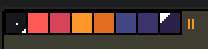
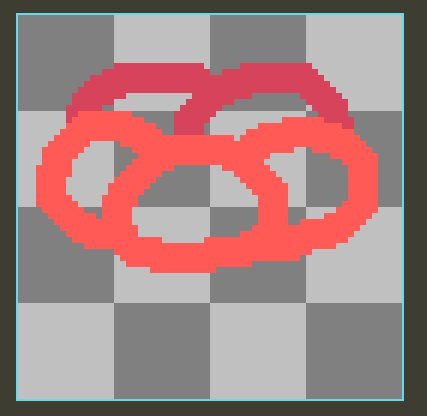
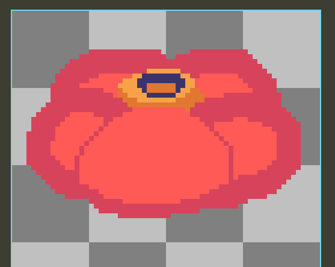
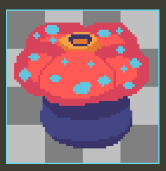
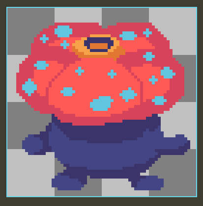
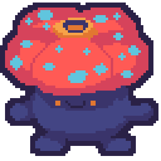
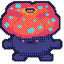
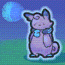

so, you want to make your graphics look bitcrushed to all hell? look no further!
how to retroify your art! (+ small pixelart guide!)
pixel art tutorial section
here's how i like doing my graphics!
first, we get a reference, and i'm going to use a pokemon i like and is relatively simple to draw:

vileplume!
so, first i create a new image of 64x64, and make a pallete from the sprite. you don't have to do this, but i like planning out the colors before i start to make it feel more organized and you can always add a color if you forget the light blue like i did
you can kinda block out a certain part by sketching it out with a large brush size. i start with the petals here, putting the front and back petals on a seperate layer (displayed with the darker red here) to make it easier to add the center bit
i add the darker red to seperate the frontmost petal from the back two, and fill everything with the base red color, and add a layer between the two petals for the spike
i also add spots here but i forgot to take a scrshot
the body is very easy to do here, just make a cylinder-y shape on a layer below all the petals
finally, i add the limbs on a layer above the body but below the petals
for finishing touches, i add the eyes in and add a double outline with the "square outline" mode
and now we have an image to bitcrush!
the actual bitcrushing
where the "magick" happens
so, for this part, you need to understand basic terminal commands
WAIT please dont leave its simple i promiseok, so this part is mostly for helping windows, if you're on macOS or Linux, you can replace magick.exe with convert
open a terminal by holding shift and right clicking an empty section of the folder, then click Open Powershell Window Here
now, type this exactly into the terminal but don't hit enter until reading the next section:magick.exe yourfile.png -coalesce -scale 128x -ordered-dither o4x4,4 -remap netscape: out.png
explanation for each part:
magick.exe- run imagemagickyourfile.png- loads your image into the program to be edited-coalesce- if your image is a gif, it modifies each frame individually instead of smearing it-scale -128x- scales the image down so it has a width of 128 pixels. height is automatically adjusted to fit aspect ratio. i'd reccomend a bigger size, like 256x, for backgrounds, but you can experiment with what looks good to you-ordered-dither o4x4,4- adds a heavy layer of dithering to the image-remap netscape:- forces the image into the websafe (netscape) color paletteout.png- specifies the filename you want to output to
remap vs posterize
there is an issue with the -remap netscape: command, it removes all transparency! you can go and edit it yourself after running the command, but there is an alternative you can replace it with:
-colors 8 limits how many colors are in the image, and keeps transparency. but it outputs an image not in the websafe palette. either one works well, but i prefer remap
there should now be a new file in your directory labelled out.png (or whatever you put in the command line) that has your new bitcrushed image! for an example, here is what the above drawing looks like:
looks cool, huh?
it even works on traditional art! (using a random drawing from my drawing folder:
minor notes and tips
if you're going to upload small images without scaling it up, make sure to add image-rendering: pixelated to the css of your image! this forces it to do no filtering on the image, and makes it look crisp
imagemagick has lots of other cool filters i can't get into here without making the article 5 gigabytes, but look through the site and experiment some! i promise the terminal is not scary
this technique works great to make a favicon and cursor too! i'd recommend using 64x64 instead of 32x32 to give it more room to be recognizable
making all the images line up with the pixels is very hard, but one way to do it is by putting everything together on seperate layers in an image editor, exporing every layer seperately (including all the whitespace), then bitcrush it. of course, you will have to crop it yourself after, but it should be at the same pixel scale
in aseprite, you can easily add an overall outline on a seperate layer by:
- creating a new layer above everything
- selecting a color that is not the one you want to outline with
- switching to magic wand tool and selecting all of the background (hold shift to combine selections!)
- hold ctrl, shift, and hit i to invert selection
- hit f to fill the selection with the current color. your sprite should be completely sillouetted
- ctrl+o to pull up outline tool
- once done, use ctrl+r to pull up the replacement tool and replace the inner color with transparency